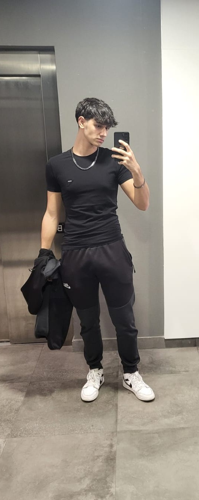
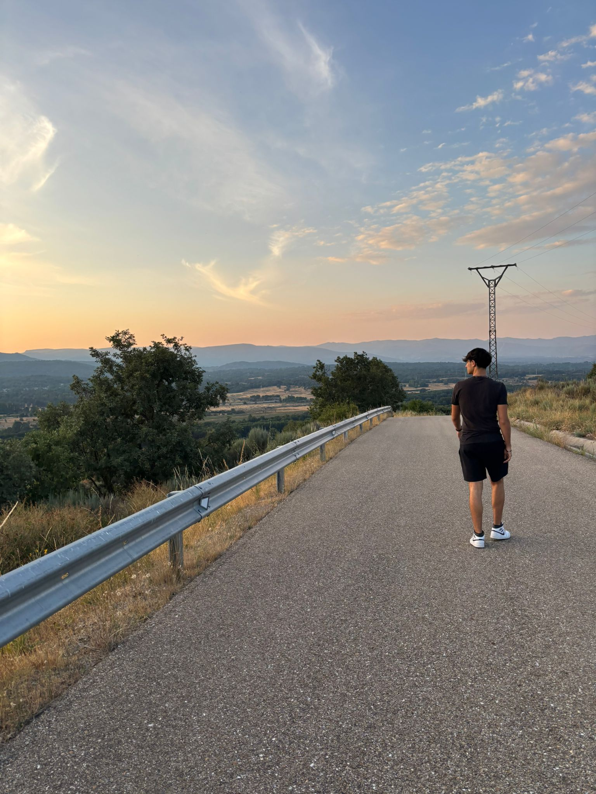
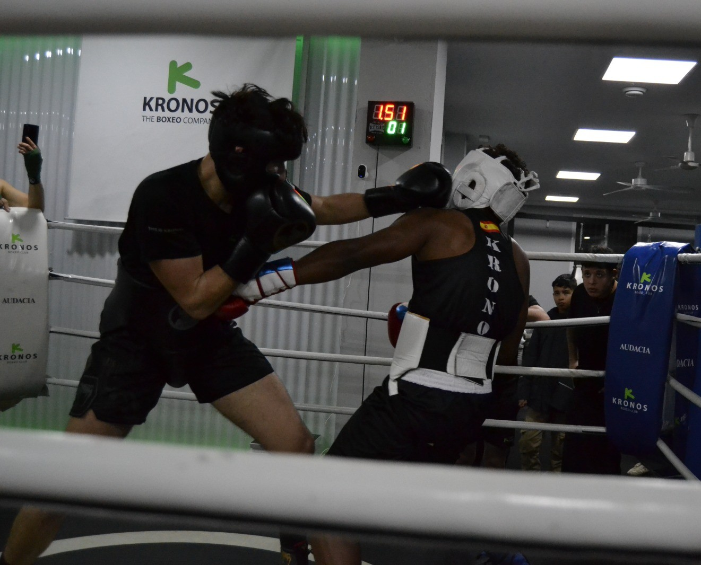

Madrid · DAW · desarrollo web
David
López Zurrón
Desarrollador de Aplicaciones Web en formación
Soy disciplinado|
Me gusta programar, aprender cosas nuevas y no conformarme con lo que ya sé. Busco crear proyectos útiles, visuales y bien construidos, combinando técnica, disciplina y ganas reales de mejorar.
// sobre mí
Quién soy y qué me mueve
Mucho más que código
Me llamo David López Zurrón, soy estudiante de Desarrollo de Aplicaciones Web y vengo de una formación tecnológica que me ha hecho ver la programación como una forma de pensar: analizar, dividir problemas y construir soluciones con criterio.
Me gusta programar, aprender constantemente y llevar cada proyecto un paso más allá. No me gusta quedarme en lo básico ni conformarme con lo que ya sé: si algo me interesa, busco entenderlo mejor y aplicarlo.
Entreno boxeo actualmente y quiero competir en un futuro. Para mí no es solo un deporte: es una forma de entrenar la disciplina, la calma bajo presión, la constancia y la capacidad de levantarse cuando algo no sale a la primera.
También me gustan los videojuegos, la música y descubrir nuevas disciplinas. A futuro quiero sacarme el C1, estudiar Ingeniería del Software en la Politécnica, Campus Sur, y empezar la piscina de 42 Madrid en julio de 2026.



Disciplina
La constancia del boxeo la aplico al estudio, al código y a cada reto técnico.
Resolución
Me gusta descomponer problemas complejos en pasos pequeños y accionables.
Calma
Intento pensar antes de actuar, especialmente cuando algo falla o hay presión.
Ambición sana
Quiero aprender más, mejorar mi nivel y construir una carrera con impacto real.
// habilidades y competencias
Mi stack y mi forma de trabajar
Nivel más alto
JavaJavaFXPOOMVCSOLIDJDBC
Frontend
HTMLCSSJavaScriptDOMAsincroníaReact + Vite
Bases de datos
MySQLPostgreSQLSQLModelo relacionalDiseño E/R
Lenguajes en aprendizaje
PythonCAlgoritmiaEstructuras de datos
Herramientas
GitGitHubJetBrains IDEsVS CodeWorkbenchMaven
Sistemas y flujo
LinuxTerminalnpm / Node.jsPrettierdraw.ioNotion
// currículum y formación
Trayectoria académica
CFGS Desarrollo de Aplicaciones Web
Prometeo by The Power · Madrid
Formación orientada al desarrollo web, programación, bases de datos, interfaces, entornos de desarrollo y proyectos completos.
Bachillerato Tecnológico
Instituto Nuestra Señora de las Nieves
Base tecnológica y científica que reforzó mi interés por la programación, la lógica y la resolución de problemas.
Etapa escolar completa
Instituto Nuestra Señora de las Nieves
Formación constante desde la infancia hasta finalizar Bachillerato, desarrollando disciplina, hábitos de estudio y curiosidad por la tecnología.
Cambridge B2 First Certificate in English
Certificación oficial
Nivel B2 acreditado. El C1 queda como uno de mis objetivos principales de futuro.
// experiencia
Ganas de empezar en el mundo profesional
Proyectos académicos y personales como base real
Aunque todavía no cuento con experiencia laboral formal, sí he trabajado en proyectos completos que me han obligado a pensar como desarrollador: diseño, arquitectura, persistencia, interfaz, lógica de negocio, control de versiones y presentación final.
Estoy deseando tener mi primera experiencia profesional para aprender de un equipo, aportar actitud y demostrar que puedo crecer rápido con responsabilidad, constancia y hambre de mejorar.
// idiomas
Comunicación sin fronteras
Español
Lengua materna
100%
Inglés
B2 FCE certificado · C1 como objetivo
75%
Francés
Básico · 4 años de ESO
30%
// proyectos
Proyectos que he construido
Pulsa cualquier tarjeta para abrir su repositorio de GitHub en otra pestaña.Fitmeteo
GitHub ↗Web social con seguimiento físico, retos gamificados, ranking y comunidad, integrando lógica de negocio y un diseño funcional. Combina una web HTML/CSS con una app JavaFX conectada a MySQL mediante JDBC.
Juego de boxeo por turnos
GitHub ↗Juego con interfaz gráfica en Java y CSS donde debes derrotar enemigos por turnos. Sigue principios SOLID, arquitectura MVC para escalar mejor y persistencia en MySQL.
UFC Athletes
GitHub ↗Web interactiva sobre atletas de UFC/MMA. Permite insertar luchadores, consultar estadísticas, manipular el DOM y usar almacenamiento local con una interfaz dinámica.
Juego web IPE
GitHub ↗Juego web interactivo basado en preguntas con opciones y palabras tabú. Manipula el DOM dinámicamente, utiliza asincronía y JavaScript para gestionar la experiencia.
Portfolio personal
GitHub ↗Esta misma página: un portfolio moderno, responsive, con navegación superior, paleta dark violeta/rosa/turquesa, secciones cuidadas y animaciones suaves.
// planes de futuro
Hacia dónde quiero ir
C1 de inglés
Conseguir el C1 para trabajar con equipos internacionales, documentación avanzada y entornos profesionales más exigentes.
Ingeniería del Software
Estudiar en la Politécnica, Campus Sur, y reforzar mi base técnica con una formación universitaria sólida.
42 Madrid
Empezar la piscina en julio de 2026 para ponerme a prueba en un entorno intenso, colaborativo y orientado a resolver problemas.
Boxeo y nuevas disciplinas
Competir en boxeo y probar MMA, jiu-jitsu y muay thai para seguir entrenando disciplina, esfuerzo y mentalidad competitiva.
// contacto
Hablemos de próximos retos
// reflexión final
Lo que estoy construyendo
“No quiero ser alguien que solo termina tareas. Quiero ser alguien que mejora con cada reto.”
Este portfolio no es solo una presentación: es una forma de ordenar quién soy, qué estoy aprendiendo y hacia dónde quiero ir. La programación me ha enseñado a pensar con estructura, a equivocarme mejor y a valorar el proceso tanto como el resultado.
Estoy al principio, pero tengo claro que quiero crecer con disciplina, humildad y ambición. Si algo define mi camino ahora mismo es eso: entrenar, estudiar, construir, fallar, corregir y volver más fuerte.